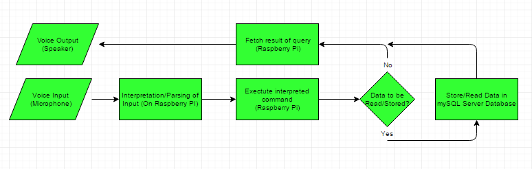
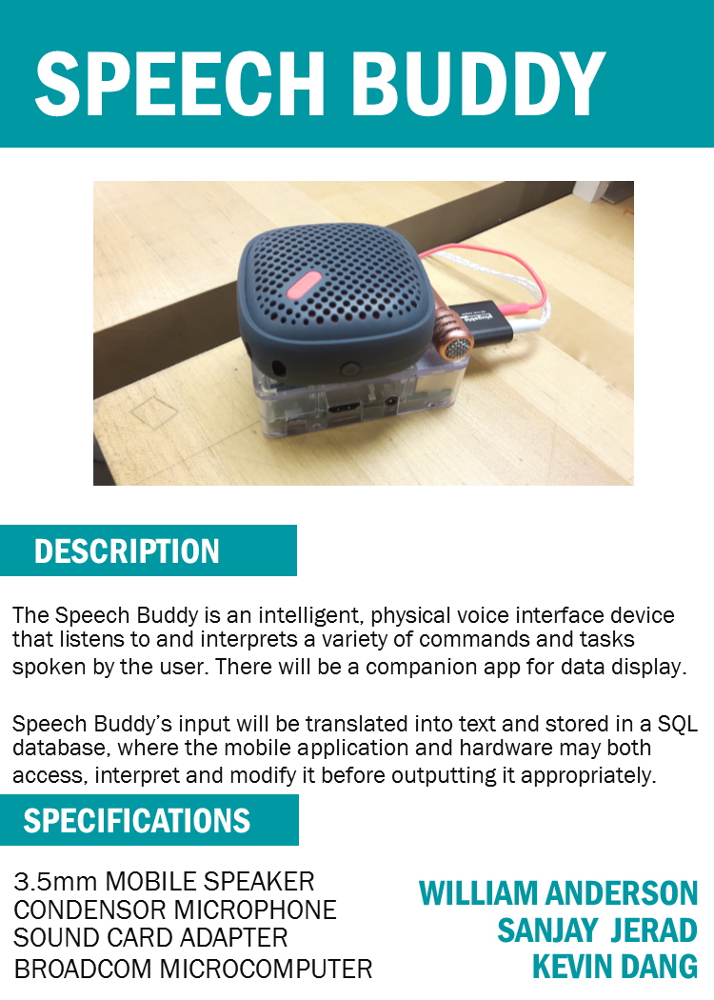
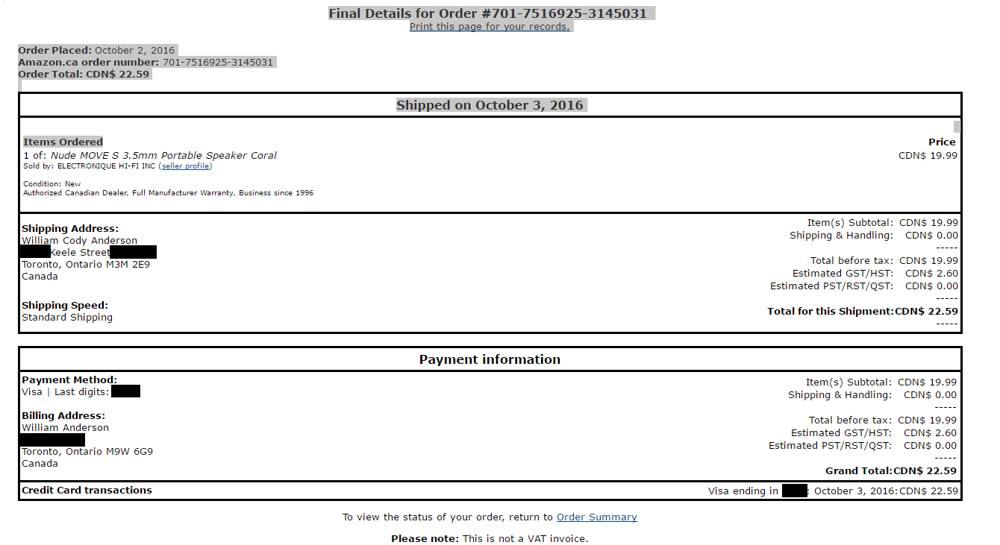
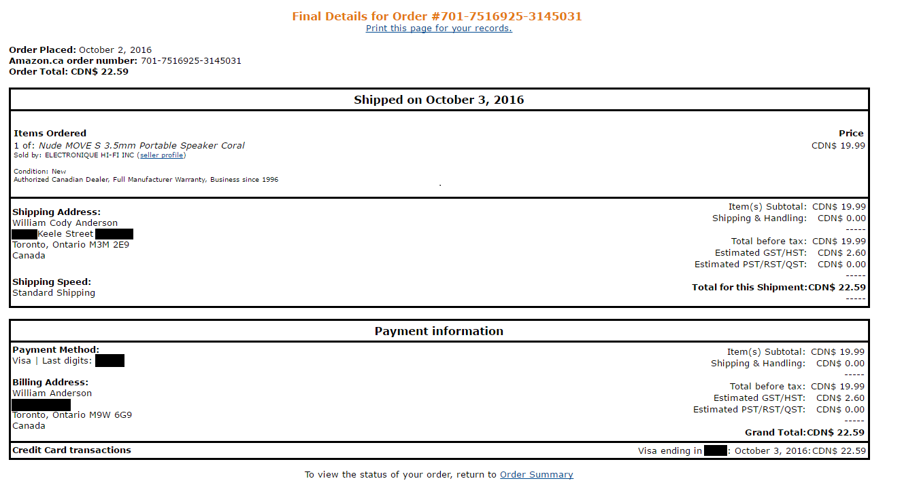
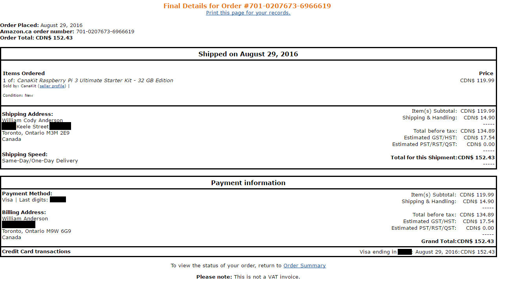

GitHub Updates and Hand-ins
SpeechBuddy Build Instructions
Introduction
Speech Buddy is a voice interface intended to make storage and manipulation of data easier, as well as perform simple various tasks via voice commands. It is intended to make simple everyday tasks, such as adding items to your calendar, easier, as well as inquiries of online information.
System Diagram
Budget and Parts
The parts and costs required to build speech buddy are as listed below:

Case
To build a Speech Buddy Case, download the json file below and upload it to:
makercase Speech Buddy Case JSON FileTime taken to Build Speech Buddy
Assuming you have to do no research as you are following my premade build method, The approxiamate time it will take to build a working Speech Buddy is about four to five hours, assuming parts delivery time is not included.
Mechanical Assembly
Setup your raspberry Pi by following the build instruction included in your kit. Connect your external speaker into the pi's 3.5 mm jack and the USB microphone into a USB 2.0 slot. Use acrylic cement to bond case together. If you intent to put Speech Buddy permanently in it's case, it is important to wire the power cord through the designated power slot in the case before sealing the box.
Software Setup
Ensure you have a fresh copy of Rasbian Jesse installed on your Micro SD card for your raspberry pi operating system. Open a terminal on your Pi and type in the command "sudo alsamixer". Select Advanced Options, then Audio Options. Set to force Output through 3.5mm jack.
Speech Buddy uses Amazon Voice Services. Make sure you have an amazon developer account before continuing, then follow the voice services installation guide provided here:
Amazon Voice SetupDo Not install the wake word activation.
Power Up and Testing
Run the Software to make speech buddy listen as directed above. Speech Buddy will output a basic tone if it is working. It currently has basic capabilities such as simple mathmatic, google queries, and time and weather updates. Speech Buddy's location may be incorrect. Test this by asking the curren time or weather, and change your location in your amazon profile accordingly.
A note for the future
This guide builds a bare bones Speech Buddy with automatic feature includes in Amazon's Voice Service. I will be implementing more capabilities and function to speech buddy in the future, as well as providing links to download these new abilites to add them to your existing Speech Buddy
SpeechBuddy Week 13 - PowerPoint
Speech Buddy Power Point DownloadSpeechBuddy Week 12 - Progress Report
Speech Buddy is now accepting voice input using the same Libraries as the Amazon Alexa. I have removed wake word dependencies so I may create my own skills and code for an Independent Speech Buddy Platform. It will use already existing Libraries to perform basic activities, such as querying google, addition, current time, etc. I am incorporating my own skills (Calenders, List) currently. I am finally caught up to my project plan and now may prepare for my presentation of a fully working prototype of Speech Buddy. My budget has changed however, as I had to purchase a new USB microphone for 14.99 because of technical difficulties with the prior one. Because of this, though already purchased, the sound card would not be necessary to include in the budget of prospective builders of Speech Buddy.Asides from the microphone issue, which was succesfully resolved, no major obstacles were encountered and the project took a great step forward this week.
SpeechBuddy Week 11 - Progress Report
Speech Buddy was shown at the open house, however without audio input as there were complications with the microphone. A keyboard was substituted to imitate voice input, but real voice input MUST be implemented by next week. A new microphone has arrived in the mail that should be able to successfully record voice input for interpretation on the speech buddy. After achieving voice input, our project will have a working sensor (voice), working hardware, and a working model, thus making us prepared for Systems Project.
SpeechBuddy Week 10 - Progress Report
Speech Buddy wil be shown at the open house this Saturday. It is currently capable of speaking through a combination of a text to speech Python library, E-speak software, sound configuration file edits and self implemented code. The next step will be to implement it's speech to text capabilities to recieve input through the microphone.
SpeechBuddy Week 9 - Build Video
SpeechBuddy Week 8 - Placard
 SpeechBuddy Placard on GithubProof of Purchase
From Amazon, shipped from two different locations, thus creating two invoices. Note the speaker differs from the one listed in the budget due to product availability issues.
  Speech Buddy Budget
Please note the speaker has changed due to availabilty, see above

Working LED

{kind=link}